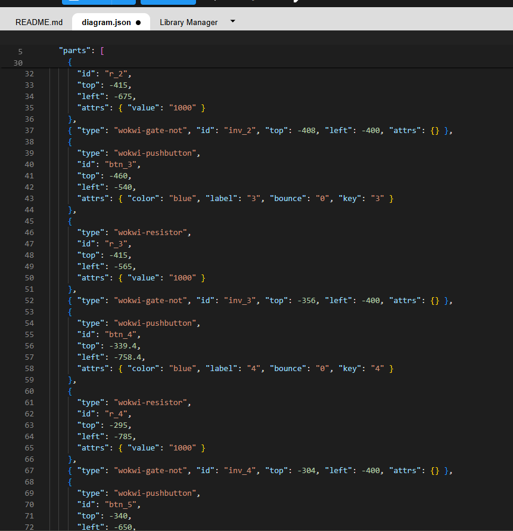

Two-Digit BCD Adding Calculator (Tiny Tapeout)
As part of my GlobalFoundries Next Generation Engineers chip design shadowing, I completed a custom two-digit decimal adding calculator designed entirely at the gate level for fabrication through Tiny Tapeout.
Inside the chip, a 4-bit Binary Coded Decimal (BCD) input from 0 to 9 is paired with a key strobe, a 100 Hz system clock, and an active-low clear signal. To prevent a held button from adding repeatedly, the key strobe passes through a two-stage D flip-flop rising-edge detector that generates a single clock-cycle enable pulse per press. On each pulse, a 4-bit ripple-carry adder sums the incoming digit with the stored ones register, and a combinational BCD correction stage checks if the result is 10 or greater; when it overflows, the logic adds 6 to wrap the ones digit back into base 10 and sends a carry pulse to a synchronous mod-10 counter for the tens digit. Both digits are held in D flip-flop registers using 2-to-1 multiplexers for hold/update control and synchronous reset gating, then sent out across the chip's 8 output pins as two 4-bit BCD values (00 through 99) that drive a pair of 7-segment displays through external combinational decoders.

Input Stage: Keypad & BCD Encoder
Outside the chip boundary, the user interacts with a 0–9 numeric keypad plus a dedicated red CLR button. Each pushbutton is paired with a 1 kΩ pull resistor and routed through a logic inverter (wokwi-gate-not) so every key press produces a clean, active-high signal for the combinational BCD encoder.
A tree of OR gates encodes the active key into a 4-bit BCD nibble (0000 through 1001) while simultaneously asserting a unified key strobe line whenever any digit key is pressed. The active-low clear line bypasses the encoder and feeds directly into the chip's synchronous reset gating.

Inside the Chip: Gate-Level Architecture
Everything between the Tiny Tapeout input and output headers is built strictly from discrete logic gates, 2-to-1 multiplexers, and D flip-flops. The datapath is organized into five clean stages so signal timing and decimal carry propagation stay predictable at 100 Hz.

STAGE 01Key Edge Detector
A button held down by a human stays high for dozens of clock cycles at 100 Hz. To make sure each press adds only once, the incoming key strobe passes through two cascaded D flip-flops. Comparing the first stage output (Q1) with the inverted second stage output (~Q2) through an AND gate emits a clean, single-clock-cycle rising-edge enable pulse.
STAGE 024-Bit Ripple-Carry Adder
Combines the 4-bit incoming BCD digit with the current 4-bit value fed back from the ones register. Built from cascaded half/full-adder gate slices (XOR, AND, OR), it produces a raw 4-bit binary sum (S3..S0) along with a carry-out bit (Cout) whenever the sum exceeds 15.
STAGE 03Combinational BCD +6 Correction
Because binary addition wraps at 16 instead of 10, a combinational detector checks whether the raw sum is 10 or greater (Cout || (S3 && S2) || (S3 && S1)). When decimal overflow is detected, a second adder stage adds 6 (0110₂) to wrap the ones digit cleanly back into 0–9 and drives a carry pulse down to the tens counter.
STAGE 04Ones Register (0–9)
Stores the 4-bit ones digit across four D flip-flops. Each bit sits behind a 2-to-1 multiplexer controlled by the single-cycle enable pulse from Stage 1—holding the current digit on idle cycles and latching the corrected sum on a keypress—followed by synchronous AND-gate reset gating tied to the active-low CLR signal.
STAGE 05Tens Counter (0–9)
A synchronous mod-10 counter that increments whenever both a valid keypress enable pulse and a BCD overflow carry pulse are asserted simultaneously. Next-state combinational logic increments 0 → 9 and wraps 9 → 0 on the next carry, using the same 2-to-1 MUX hold/update selection and synchronous active-low reset gating across four D flip-flops.
Output Stage: 7-Segment Decoders & Display
The chip exports its internal state across all 8 Tiny Tapeout output pins: four pins for the tens BCD digit and four pins for the ones BCD digit. Externally, two identical combinational BCD-to-7-segment decoders (TENS 7-SEG DECODER and ONES 7-SEG DECODER) translate each 4-bit value into the seven segment lines (a–g) using inverted inputs and minimized sum-of-products gate networks, driving the dual common-cathode display from 00 through 99.

Debugging with diagram.json
When a gate-level schematic grows to dozens of logic gates, flip-flops, and overlapping buses, hunting down a single miswired pin or floating input visually on the canvas gets painful fast. For a bulk of debugging when the circuit wasn't behaving as expected, I worked directly inside Wokwi's underlying diagram.json netlist.
Inspecting and editing diagram.json directly let me verify exact part IDs, enforce consistent 1000 Ω resistor values on every button, explicitly disable switch bounce ("bounce": "0") during logic bring-up, bind keyboard shortcuts ("key": "1"–"9") for rapid testing, and trace every connection pair line-by-line instead of guessing which green wire landed on which gate pin.

diagram.json directly in Wokwi to audit button definitions, 1 kΩ resistors, inverter IDs, and netlist wiring during debugging.{
"version": 1,
"author": "Uri Shaked",
"editor": "wokwi",
"parts": [
{ "type": "wokwi-vcc", "id": "kp_vcc" },
{ "type": "wokwi-gnd", "id": "kp_gnd" },
{
"type": "wokwi-resistor",
"id": "r_2",
"top": -415,
"left": -675,
"attrs": { "value": "1000" }
},
{ "type": "wokwi-gate-not", "id": "inv_2", "top": -408, "left": -400, "attrs": {} },
{
"type": "wokwi-pushbutton",
"id": "btn_3",
"top": -460,
"left": -540,
"attrs": { "color": "blue", "label": "3", "bounce": "0", "key": "3" }
},
{
"type": "wokwi-resistor",
"id": "r_3",
"top": -415,
"left": -565,
"attrs": { "value": "1000" }
},
{ "type": "wokwi-gate-not", "id": "inv_3", "top": -356, "left": -400, "attrs": {} },
{
"type": "wokwi-pushbutton",
"id": "btn_4",
"top": -339.4,
"left": -758.4,
"attrs": { "color": "blue", "label": "4", "bounce": "0", "key": "4" }
},
{
"type": "wokwi-resistor",
"id": "r_4",
"top": -295,
"left": -785,
"attrs": { "value": "1000" }
},
{ "type": "wokwi-gate-not", "id": "inv_4", "top": -304, "left": -400, "attrs": {} }
// ... remaining keypad, core logic stages, and 7-segment decoder parts & connections
]
}